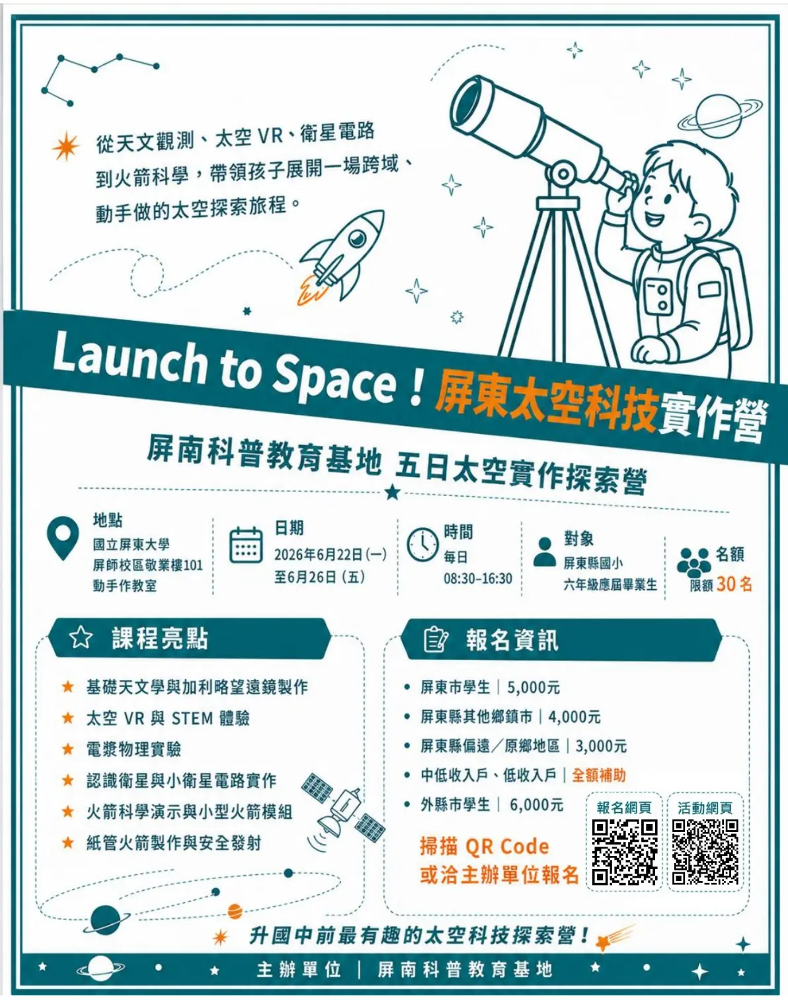
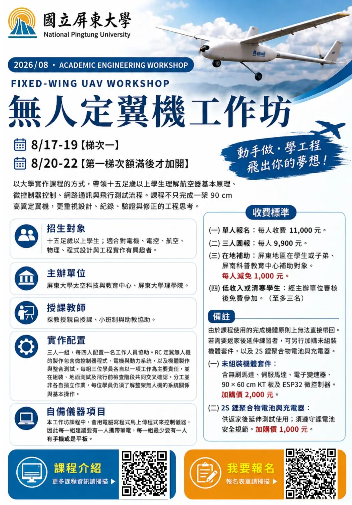
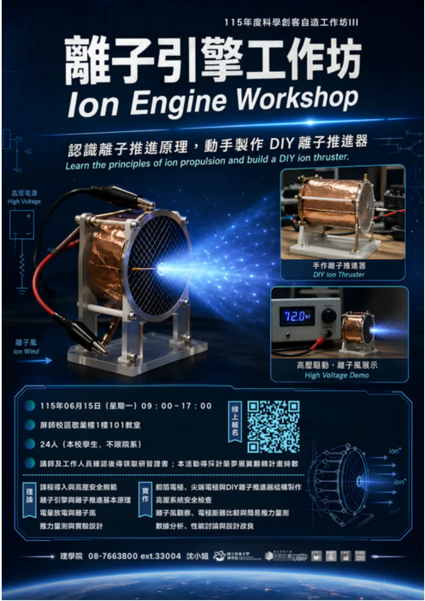
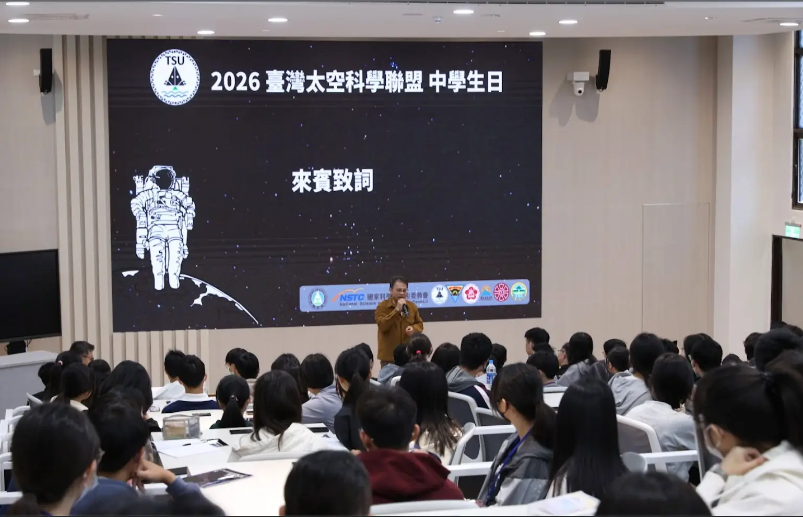
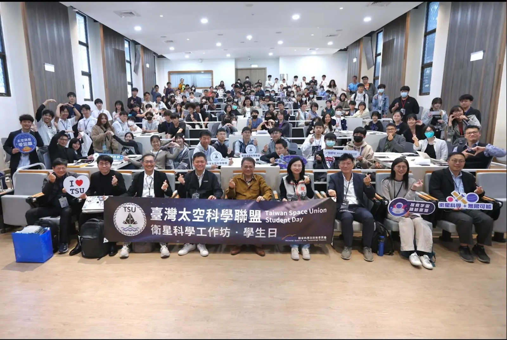
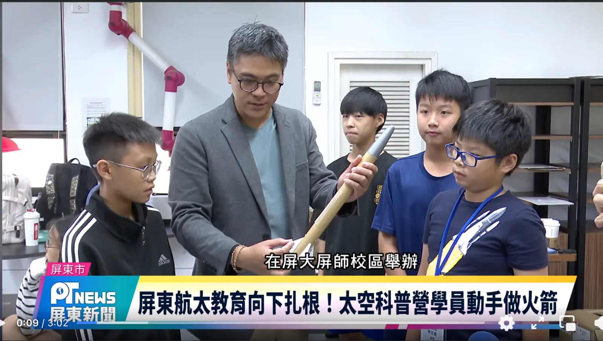
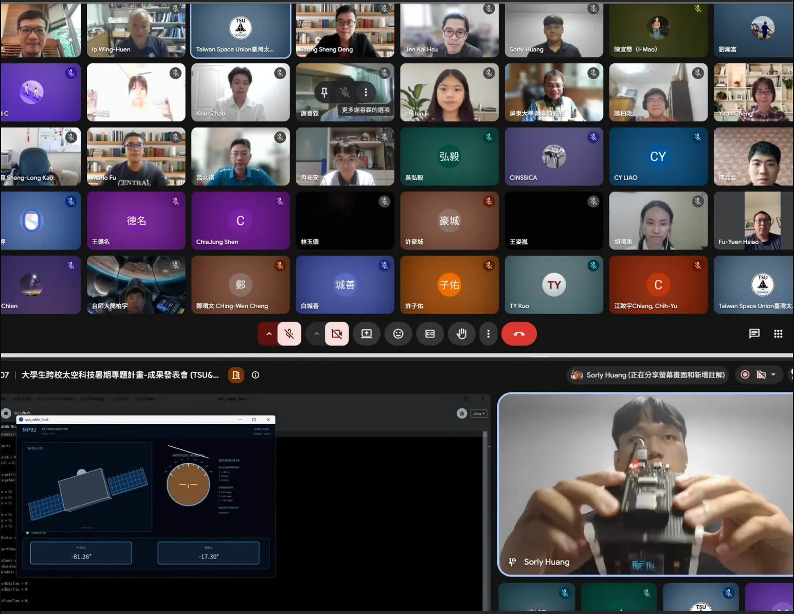

中心主任
劉宗哲 老師
國立屏東大學應用物理系
ABOUT THE CENTER
為配合國家太空科技發展政策、教育部高等教育深耕與區域教育資源共享政策，國立屏東大學設置太空科技與教育中心。
中心推動太空科技教育、航太科普推廣、跨校 STEM 課程、地方科學教育服務及屏南科普教育基地相關業務，作為校內外太空教育與實作資源的整合平台。
設置要點 115 年 6 月 17 日經本校 114 學年度第 2 學期研究發展會議審議通過
CENTER MISSIONS
依據中心設置要點，從課程、技術、師資培育到國際合作，推動區域太空科技教育。
規劃與執行太空科技、航太教育及 STEM 實作課程。
推動探空火箭、高空氣球、無人機、低軌衛星地面站、全天照相機、教育用立方衛星、教育用衛星及相關教學模組。
支援屏南科普教育基地之課程、展示、競賽、營隊、教師研習與行政執行。
開發適用於國高中銜接之太空科學與跨領域教材。
辦理教師研習營與共同備課社群，培育區域太空教育師資。
辦理學生科學競賽、專題培育、成果展與科普推廣活動。
推動衛星資料接收、遙測影像分析、AI 影像辨識與教育展示應用。
推動 JAXA、Sora-Miru、鹿兒島、筑波、和歌山 IFES、APRSAF、ESA Moon Camp 等國際交流與合作。
承接政府機關、教育部、國科會、縣市政府、學校及產業委託之相關計畫。
辦理其他符合本中心宗旨之研究、教育、推廣及社會服務事項。
ORGANIZATION
由中心主任統籌發展方向，副主任共同推動中心業務，行政團隊協助活動規劃與日常運作。
中心主任
國立屏東大學應用物理系
副主任
副主任
行政助理
功能組
依業務需要得設置ACTIVITIES & OUTREACH
記錄中心辦理及參與的實作課程、成果發表、競賽與科普推廣。
2026
科學教育交流
科學創客自造工作坊 III
科學創客自造工作坊 IV
五日實作營隊
高中課程支援
競賽推廣
三日實作課程
三日實作課程
08.19—22、08.24
學生專題交流
2026
科普推廣
科普推廣
校際實作課程
ACTIVITY GALLERY






